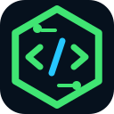

Личный сервер
После регистрации у тебя есть свой учебный Linux/DevOps-сервер в браузере.

RootOPSDevOps-сервер в браузере
RootOPS не просто курс. Это учебный сервер, где короткая теория сразу превращается в реальные команды.
guest@rootops:~$ rootops server status
сервер: доступен после регистрации
guest@rootops:~$ rootops lab open linux-files
guest@rootops:~$ rootops start
Зарегистрируйся, чтобы получить сервер, терминал и проверку результата.
В кабинете откроются сервер, задания, терминал и прогресс.
guest@rootops:~$
После регистрации у тебя есть свой учебный Linux/DevOps-сервер в браузере.
Учись не по видео, а через реальные команды и понятные задания.
RootOPS проверяет, что ты сделал на сервере, и показывает следующий шаг.
Как проходит урок
Один урок - это маленький понятный цикл. Прочитал, выполнил команду, сделал задание, получил проверку.
Только то, что нужно для задания.
Выполняешь её в браузерном терминале.
Делаешь маленькую реальную задачу.
RootOPS смотрит результат на сервере.
Что изучаешь
Без скачков и лишнего шума. Каждый шаг связан с практикой на твоём сервере.
Доступ
На главной можно понять формат. После регистрации откроются личный сервер, лаборатории, терминал, проверка заданий и прогресс.
Войди или создай аккаунт. После регистрации подтвердим почту и откроем сервер.